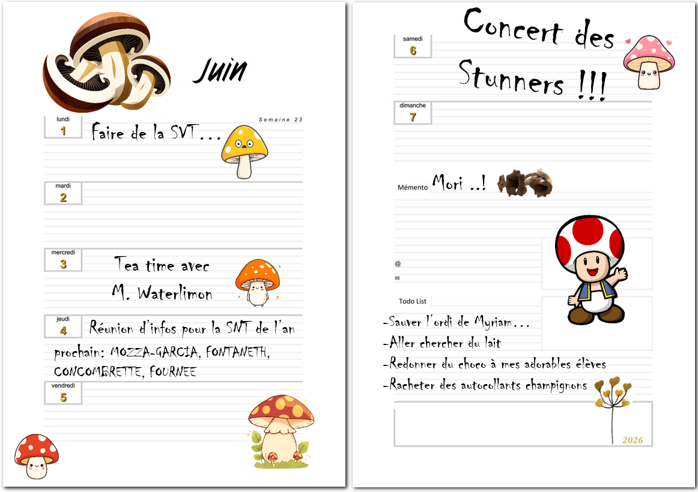

Quel est le titre de ce morceaux ? Son auteur ? Sa note ?
Les dates de vie de l'auteur ? L'âge qu'il avait quand il est mort ?

Tiens tiens... une réunion sur la snt dans le jardin... peu avant qu'on l'y trouve mort ! Je crois qu'on a trouvés nos suspects ! Et ce cup of Tea avec M. Waterlimon la veille... Allons voir si il sait quelque chose ! je crois que les salles des professeurs sont indiqués sur le panneau d'affichage.